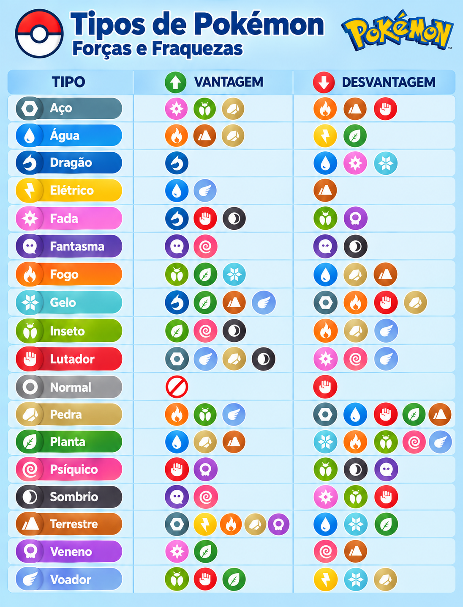

Conhecer as vantagens e fraquezas dos tipos de Pokémon é fundamental para escolher os melhores ataques e estratégias durante as batalhas. Cada tipo possui uma relação diferente com os demais: alguns ataques causam mais dano contra determinados tipos, enquanto outros são menos eficazes. A imagem apresenta os 18 tipos de Pokémon — Aço, Água, Dragão, Elétrico, Fada, Fantasma, Fogo, Gelo, Inseto, Lutador, Normal, Pedra, Planta, Psíquico, Sombrio, Terrestre, Venenoso e Voador — organizados de acordo com suas relações de combate.
🟢 Vantagem: mostra os tipos contra os quais aquele tipo é super eficaz, causando mais dano.Por exemplo, Pokémon do tipo Água possuem vantagem contra Fogo, Terrestre e Pedra, mas são vulneráveis a ataques Elétricos e de Planta. Da mesma forma, ataques do tipo Fogo são fortes contra Inseto, Planta e Gelo, enquanto Pokémon de Fogo precisam tomar cuidado com ataques de Água, Pedra e Terrestre. Assim, a tabela pode ser utilizada como uma consulta rápida durante as batalhas, ajudando a identificar qual tipo de ataque escolher e quais adversários devem ser evitados.
